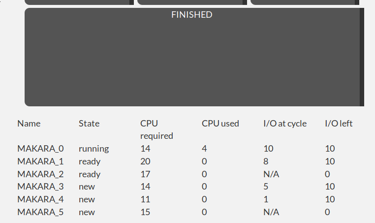

1) Boot time
Delay for the simulation to start, given in CPU cycles.
2) Scheduling time
CPU cycles it takes the scheduler to actually take action.
3) Creation probability
Chance that we will get a new process each cycle, given as a 100-based percentage.
4) Quantum cycles
Length of the CPU quantum, given in CPU cycles.
5) Processor cycles (average)
Average CPU cycles that our processes will need.
6) Processor cycle offset
Offset of our CPU cycles average ( ± )
7) I/O cycles (average)
Average I/O cycles that our processes will need, only if they do need them.
8) I/O cycle offset
Offset of our I/O cycles average ( ± )
9) I/O probability
Chance that each process will require the use of I/O, given as a 100-based percentage.
10) Miliseconds per tick
Amount of miliseconds that each CPU cycle will take.
11) Max. active processes
Maximum amount of active processes distributed through the simulation.
12) List capacity
Maximum space each list can span, given as a process count.
Want to find out how each process is doing? Check the status table.
